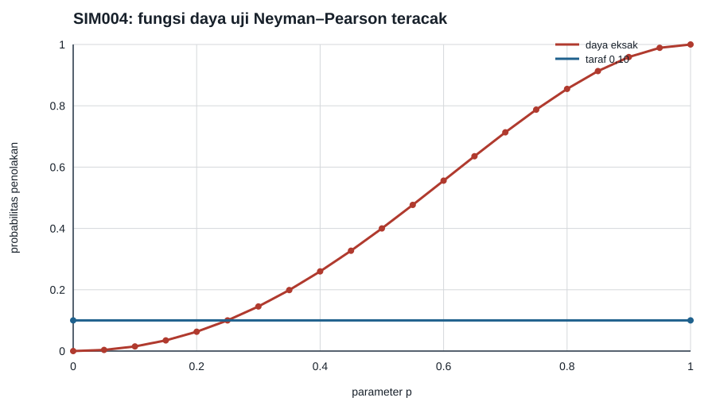

Uji Neyman–Pearson teracak dengan ukuran uji tepat
Pertimbangkan \(X\sim\operatorname{Binomial}(4,p)\) dan uji sederhana \(H_0:p=0{,}25\) melawan \(H_1:p=0{,}60\) pada \(\alpha=0{,}10\). Rasio fungsi kemungkinan meningkat seiring \(x\), sehingga uji Neyman–Pearson diberikan oleh aturan berikut: tolak bila \(X\ge3\), terima bila \(X\le1\), dan bila \(X=2\), tolak dengan peluang \(\gamma\). Randomisasi pada himpunan tempat rasio sama dengan ambang merupakan bagian dari teorema, bukan koreksi numerik ad hoc; lihat Optimalitas pengujian: Neyman–Pearson, MP, UMP, dan rasio fungsi kemungkinan monoton.
Menentukan peluang randomisasi
Pilih \(\gamma\) sedemikian rupa sehingga
Perhitungan eksak menghasilkan \(\gamma=0{,}2333333333\). Dengan nilai itu, ukuran uji eksak bernilai 0,10 hingga batas galat aritmetika mesin. Daya eksak pada \(p=0{,}60\) adalah 0,55584.
Pemeriksaan Monte Carlo
- Benih generator PCG64:
140004. - Replikasi untuk hipotesis nol dan alternatif: masing-masing 500.000.
- Ukuran uji empiris: 0,099694.
- Daya empiris pada \(p=0{,}60\): 0,555968.
- Kedua hasil harus berjarak kurang dari 0,002 dari probabilitas eksaknya.
Monte Carlo memeriksa implementasi, sedangkan ukuran dan daya analitis tetap ditentukan oleh penjumlahan peluang binomial. Dengan demikian, fluktuasi acak tidak boleh dipakai untuk mengubah \(\gamma\).

Data tersedia dalam ringkasan CSV dan CSV kurva daya.